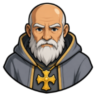
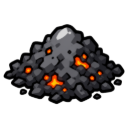

👻
Bones of Ashvale
Something restless stirs in the graveyard. Put it to rest and bring back what it left behind.
| Property | Value |
|---|---|
| Quest giver |  Father Aldous |
| Zone | 🌾 Ashvale |
| Quest points | 2 |
| Requirements | ✝️ Prayer 5 |
Objectives
- Hand in

Ashes ×5 - Defeat 1 ×
 Ragged Ghoul
Ragged Ghoul
Rewards
- 🪙 300 coins
- 300 ✝️ Prayer XP
 Tattered Cape
Tattered Cape